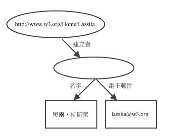

| 上一頁(P) | 上一層(T) | 下一頁(N) |
| 1.介紹 | 3. 容器 |
資源描述架構的基礎是個描述特性與特性值的模型。資源描述架構模型利用已建立的原理，這些原理是來自於不同的資料描述社群。資源描述架構的特性可以想成是資源的屬性，而且在意義上符合傳統的屬性--屬性值的方式。資源描述架構的特性也可以描述資源間的關係並且一個資源描述架構的模型因此像是一個實體關係圖(更精確地說，詞彙描述(本身為資源描述架構資料模型的實例)是實體關係圖)。以物件導向的術語來說，資源相當於物件，特性相當於實例變數。
資源描述架構資料模型是以語法中立的方式描述資源描述架構的表達式。資料模型的表示法是用來評估表達式在意義上是否相等。兩個資源描述架構的表達式只有當它們的資料模型表示法是相同時，那麼這兩個表達式才是相等的。這種相等性的定義允許表達式之間有些語法上的不同而不會改變其意義(請看第6節取得更多關於字串比較問題的討論)。
資料模型基本上由三種物件型態所組成：
| 資源 | 可以由資源描述架構的表達式描述的所有事物都可稱為資源。資源可以是整個網頁、或網頁的一部份(網頁內的元素)、一群網頁的集合(網站)、無法經由網路存取的物件(平面書)…等。資源都是以統一資源識別符號加上一個選項的連結錨識別符號(請看[統一資源識別符號])命名的，任何事物都可以有個統一資源識別符號。統一資源識別符號的延伸性允許使用識別符號表示任何可想得到的實體。 |
| 特性 | 特性是用來描述資源的特色。每個特性都有一個特定的意義，可定義它的許可值、描述的資源型態、以及和其它特性之間的關係。這份文件並不會解釋特性的特色如何表達，想知道這些資訊，請參考詞彙描述規格書)。 |
| 陳述式 | 一個特定的資源加上特性及特性值就是一個資源描述架構的陳述式。而在陳述式中，資源、特性、特性值分別稱為主語、述語、賓語。陳述式的賓語(特性值)可以是另一個資源或是文字，像是由統一資源識別符號指定的資源或是簡單的字串或是由延伸標記語言所定義的原型資料型態。在資源描述架構的術語中，文字可能有延伸標記語言的標籤卻無法經由資源描述架構的處理程式進行評估。如何表達文字中的標記，關於這些語法上的限制，請看2.2.1節。 |
資源是由資源識別符號識別的。資源識別符號是一個統一資源識別符號加上一個選擇性的連結錨識別符號(請看 2.2.1節)組合而成。為了凸顯這節的目的，特性只會由簡單的名稱參考。
請考慮下列一個簡單的句子：
奧爾‧拉斯萊是資源 http://www.w3.org/Home/Lassila 的建立者。
這個句子由下列組成的：
主語(資源) http://www.w3.org/Home/Lassila 述語(特性) 建立者 賓語(文字) "奧爾‧拉斯萊"
在這份文件中會用符號圖形(也稱為弧與節點圖)圖解資源描述架構的陳述式。在這些圖形中，節點(橢圓形的)表示資源而弧表示特性。表示文字的節點則會畫成長方形，所以上面的句子用圖解就像這樣：
圖1：簡單的弧與節點圖
注意：箭頭的方向是很重要的，弧總是由陳述式的主語指到陳述式的賓語。上面的圖解也可以讀成 "資源 http://www.w3.org/Home/Lassila 有個建立者奧爾‧拉斯萊"，或是用一般的表示方式"<主語> HAS <述語> <賓語>"。
現在請考慮這樣的例子，我們要對這個資源的建立者描述更多的特色。用文字表示的話，就像這樣：
有個個體叫做奧爾‧拉斯萊， 電子郵件是 <lassila@w3.org>，資源 http://www.w3.org/Home/Lassila 的建立者。
這個句子的目的是使"建立者"特性的特性值更趨於結構化。在資源描述架構中這樣的一個實體可表示成另一個資源。不過，上述的句子並沒有給這個資源一個名稱，所以它是匿名的，因此在下面的圖解中這個資源會以空的橢圓形表示：
完整說明
圖2：具有結構化的特性值
注意：依照上一個例子的讀法，這個圖解應該讀成 "資源 http://www.w3.org/Home/Lassila 有個建立者，而這個建立者的名子是奧爾‧拉斯萊並且電子郵件是 lassila@w3.org"。
上一個具有結構化實體的例子也可以指定一個唯一的識別符號。而識別符號的選擇是經由資料庫的設計者決定的。繼續接著這個例子，想像一下，對於"人"這個資源使用員工證代表唯一的識別符號。統一資源識別符號也就成為每位員工唯一的索引(由組織定義)，可能會像這樣 http://www.w3.org/staffId/85740，現在想想這兩個句子：
有個個體叫做奧爾‧拉斯萊並且有個電子郵件 lassila@w3.org，這個個體會經由員工證 85740 參考，而資源 http://www.w3.org/Home/Lassila 是由這個個體建立的。
表示這個句子的資源描述架構模型為：
圖3：結構化的特性值與識別符號
注意阿，這個圖和上一個圖是完全相同的，差別在於原本的匿名資源，現在加了一個統一資源識別符號。從第二個例子來看這個模型，從單一句子產生的陳述式和分開的句子產生的陳述式並沒有什麼差別。然而某些應用程式需做這樣子的區分，當然資源描述架構是可以支援的，請看第4節，陳述式的陳述式以取得進一步的說明。
@@資源描述架構資料模型提供一個抽像的、概念上的架構來定義中繼資料以及使用中繼資料，當然目的也包含用具體的語法建立與交換中繼資料。這份文件使用延伸標示語言作為資源描述架構的交換語法。資源描述架構也需要延伸標記語言名稱空間工具更精確地和每個特性結合在一起，還有詞彙描述會定義特性，請看2.2.3節，詞彙描述與名稱空間。@@
這份文件中語法的描述是使用定義在延伸標記語言第6節的延伸巴科斯-諾爾范式標記法，以描述資源描述架構語法的元素。這裡所用的延伸巴科斯-諾爾范式標記法是讓人們容易閱讀而編排的，尤其是 "rdf" 斜體字用來表示可變的名稱空間前綴字而不是更精確的巴科斯-諾爾范式 標記法 " '<' NSprefix ' : ... ' "。也暗示著特性及型態名稱在結束標籤要有相對應的起始標籤，也暗示其它延伸標記語法的規則，像是空白字元規則、引號可用單引號或雙引號、跳脫字元、大小寫區分、語言標籤…等。
這份文件定義兩種延伸標記語言的語法以編碼資源描述架構資料模型的實例。序列化語法是以非常標準的方式表達資料模型全部的能力，而包含額外結構的縮寫語法則是提供更簡潔的形式表示資料模型的子模型。資源描述架構解釋元件會預期實作序列化語法和縮寫語法。結果是中繼資料的作者可自由混合使用這兩種語法。
單一資源描述架構的陳述式一般來說很少單獨地出現，而是一個資源包含好幾個特性。資源描述架構/延伸標記語言的語法已設計成提供這種方法，只需簡單地把同一資源的多個陳述式放到 Description 元素中即可。Description 元素以 about 屬性指定陳述式可運用那些資源。假設資源不存在(像是沒有資源識別符號)，則 Description 元素可以使用 ID 屬性作為資源的識別符號。
基本的資源描述架構序列化語法看起來像這樣：
[1] RDF ::= ['<rdf:RDF>'] description* ['</rdf:RDF>']
[2] description ::= '<rdf:Description' idAboutAttr? '>' propertyElt*
'</rdf:Description>'
[3] idAboutAttr ::= idAttr | aboutAttr
[4] aboutAttr ::= 'about="' URI-reference '"'
[5] idAttr ::= 'ID="' IDsymbol '"'
[6] propertyElt ::= '<' propName '>' value '</' propName '>'
| '<' propName resourceAttr '/>'
[7] propName ::= Qname
[8] value ::= description | string
[9] resourceAttr ::= 'resource="' URI-reference '"'
[10] Qname ::= [ NSprefix ':' ] name
[11] URI-reference ::= string, interpreted per [URI]
[12] IDsymbol ::= (any legal XML name symbol)
[13] name ::= (any legal XML name symbol)
[14] NSprefix ::= (any legal XML namespace prefix)
[15] string ::= (any XML text, with "<", ">", and "&" escaped)
@@The RDF element is a simple wrapper that marks the boundaries in an XML document between which the content is explicitly intended to be mappable into an RDF data model instance.如果應用程式能夠理解資源描述架構的內容，也可以省略 RDF 元素。@@
Description 元素包含剩下的元素，這會在模型實例中建立陳述式。Description 元素可以想成是(資源描述架構語法的基本用途)簡單的一個地方，以處理想要描述的可識別資源。一般來說，一個資源可以產生一個以上的陳式述，Description 元素提供一種方法可以讓好幾個陳述式只需指定一次資源的名稱。
當 Description 元素指定 about 屬性時，則 Description 元素內的陳述式會參考某個資源，而這個資源的識別符號是由 about 屬性決定的。about 屬性的屬性值會解釋成統一資源識別符號的參考(請看統一資源識別符號第4節[URI])。相對應的資源識別符號是經由解析統一資源識別符號的參考而取得，這會變成絕對的形式。如果統一資源識別符號的參考包含片斷識別符號，那麼資源識別符號只會參考所包含資源的子元件，也就是由相對應的片斷識別符號所包含的資源(請看 [Dexter94]]，否則識別符號會變成所指定的統一資源識別符號參考整個資源。Description 元素假設沒有指定 about 屬性，這會表示一個新資源。這樣的資源可能是代理人、快取似服器，對於其它的實體資源來說，並沒有一個可以辦識的統一資源識別符號。而 Description 元素有指定 ID 屬性的話，那麼資源識別符號會成為行內資源的連結錨識別符號。
如果另一個 Description 元素或特性值需要參考行內資源，那麼會使用資源的 ID 屬性的屬性值做為 about 屬性的屬性值。ID 屬性可建立新資源而 about 屬性參考一個存在的資源，因此 Description 元素可以指定 ID 屬性或是 about 屬性，但要注意的是，不可以同時指定這兩種屬性。每個 ID 屬性的屬性值必需在單一文件中是唯一的。
@@一個 Description 元素可以包含一個以上的 propertyElt 元素，而且這些元素的特性名稱是相同。每個這樣的 propertyElt 元素會在圖中增加一個弧，而這個圖的解釋是由詞彙描述的設計者決定的。@@
在 propertyElt 元素中，resource 屬性可指定某些其它的資源，而這些資源是 propertyElt 元素的特性值，也就是說，陳述式的賓語是另一個由統一資源識別符號辦別的資源而不是文字。賓語的資源識別符號是經由解析 resource 屬性的統一資源識別符號的參考取得，這個方法和上述的 about 屬性是一樣的。string 必需符合延伸標記語言的格式，如果字串包含字元序列(像是 "<" 及 "&")，這些字元會違反延伸標記語言的規則或是看起來像標記，因此可使用引號及跳脫機制。請看第6節以取得額外的語法以指定符合延伸標記語言規則的特性值，這樣的標記並不會由資源描述架構加以解釋。
@@特性名稱必需和詞彙描述相互結合，要如何做到呢？以名稱空間前綴字合格元素名稱並使得相對應的詞彙描述明確連接到特性的定義或是經由宣告一個預設的名稱空間(請看[名稱空間])。@@
這是 2.1.1 節中出現的例句
奧爾‧拉斯萊是資源 http://www.w3.org/Home/Lassila 的建立者。
以資源描述架構/延伸標記語言表示的話，就像這樣：
<rdf:RDF xmlns="http://www.w3.org/1999/02/22-rdf-syntax-ns#"
xmlns:s="http://description.org/schema/">
<rdf:Description about="http://www.w3.org/Home/Lassila">
<s:建立者>奧爾‧拉斯萊</s:建立者>
</rdf:Description>
</rdf:RDF>
在這裡名稱空間前綴字 "s" 參考一個特定的名稱空間前綴字，這是由文件的作者指定的，而延伸標記語言名稱空間的宣告可能像是這樣：
xmlns:s="http://description.org/schema/"
@@這個名稱空間的宣告一般來說會包含在 rdf:RDF 元素中以做為一個延伸標記語言的屬性，當然也可以包含在一個特定的 Description 元素內或是個別的 propertyElt 元素內。名稱空間宣告中的名稱空間是個全域的唯一識別符號可做為特定詞彙描述，而這個中繼資料的作者用它來定義"建立者"特性的用法。其它的詞彙描述也可能定義"建立者"特性並且兩個特性可經由各自的詞彙描述識別符號區分開來。要注意的是，詞彙描述通常定義好幾個特性，單一的名稱空間宣告已經足夠建立許多可用的特性的詞彙。@@
如果要描述上方的句子，完整的延伸標記語言的文件可能會像這樣：
<?xml version="1.0" encoding="UTF-8"?>
<rdf:RDF
xmlns:rdf="http://www.w3.org/1999/02/22-rdf-syntax-ns#"
xmlns:s="http://description.org/schema/">
<rdf:Description about="http://www.w3.org/Home/Lassila">
<s:建立者>奧爾‧拉斯萊</s:建立者>
</rdf:Description>
</rdf:RDF>
使用預設的名稱空間語法[名稱空間]使得資源描述架構的名稱空間成為預設的名稱空間，可寫成如下：
<?xml version="1.0" encoding="UTF-8"?>
<RDF
xmlns="http://www.w3.org/1999/02/22-rdf-syntax-ns#"
xmlns:s="http://description.org/schema/">
<Description about="http://www.w3.org/Home/Lassila">
<s:建立者>奧爾‧拉斯萊</s:建立者>
</Description>
</RDF>
名稱空間宣告還可以放在個別的 Description 元素中或是個別的 propertyElt 元素中：
<?xml version="1.0" encoding="UTF-8"?>
<RDF xmlns="http://www.w3.org/1999/02/22-rdf-syntax-ns#">
<Description about="http://www.w3.org/Home/Lassila">
<s:建立者 xmlns:s="http://description.org/schema/">
奧爾‧拉斯萊
</s:建立者>
</Description>
</RDF>
名稱空間宣告還可以是巢狀的，所以上面的例子還可以精簡成：
<?xml version="1.0" encoding="UTF-8"?>
<RDF xmlns="http://www.w3.org/1999/02/22-rdf-syntax-ns#">
<Description about="http://www.w3.org/Home/Lassila">
<建立者 xmlns="http://description.org/schema/">
奧爾‧拉斯萊
</建立者>
</Description>
</RDF>
@@Highly condensed expressions such as this are discouraged, however, when the RDF/XML encoding is written by hand or expected to be edited in a plain text editor. Though unambiguous, the possibility of error is greater than if explicit prefixes are used consistently. Note that an RDF/XML fragment that is intended to be inserted in other documents should declare all the namespaces it uses so that it is completely self-contained. For readability, the introductory examples in the remainder of this section omit the namespace declarations in order to not obscure the specific points being illustrated.@@
儘管以序列化語言表達資源描述架構模型的結構是最清礎的，不過常常需要使用更簡潔的形式，而資源描述架構縮寫語法可達成這樣的功能。更多的好處是，縮寫語法允許文件按照某些已建構好的延伸標記語言文件型態定義以直接解釋資源描述架構模型。
共有三種縮寫語法，第一種適合當特性不會重覆出現在 Description 元素中並且特性的特性值是文字時。由於這樣，特性可以當成 Description 元素中的一個延伸標記語言的屬性，上一個例子就會變成：
<rdf:RDF> <rdf:Description about="http://www.w3.org/Home/Lassila" s:建立者="奧爾‧拉斯萊"/> </rdf:RDF>
因為 Description 元素並沒有其它的內容，一但"建立者"特性寫成延伸標記語言屬性的形式，就會採用延伸標記語言空元素的語法，因此 Description 元素的結束標籤會被刪除。
這裡有另一個使用相同縮寫語法的例子：
<rdf:RDF>
<rdf:Description about="http://www.w3.org">
<s:發表者>全球資訊網協會</s:發表者>
<s:標題>全球資訊網協會官方首頁</s:標題>
<s:日期>1998-10-03T02:27</s:日期>
</rdf:Description>
</rdf:RDF>
全寫成屬性的形式，並且沒有結束標籤了：
<rdf:RDF>
<rdf:Description about="http://www.w3.org"
s:發表者="全球資訊網協會"
s:標題="全球資訊網協會官方首頁"
s:日期="1998-10-03T02:27"/>
</rdf:RDF>
請注意即使當這兩個資源描述架構的表達式是相等的，不同的處理引擎也可能用不同的方式處理。或許是這樣，當這兩個表達式都插入到超連結文字標記語言中，而對於那些無法辦識資源描述架構內容的瀏覽器來說，第一個表達式可能顯示特性的特性值，而第二個表達式應該不會顯示任何文字(或是至少為一個空白字元)。
@@第二種縮寫形式可用在巢狀的 Description 元素中。這種縮寫形式可用於特定的陳述式當陳述式的賓語是另一個資源而且任何特性的特性值都指定於行內且第二層資源為字串時。這個例子中，有一種類似的轉換，也就是從延伸標記語法的元素名稱轉成延伸標記語言的屬性：在巢狀
Description 元素中資源的特性可以寫成 Description 元素內 propertyElt 元素延伸標記語法的屬性。@@
2.1.1 節第二個例句：
有個個體叫做奧爾‧拉斯萊並且有個電子郵件 lassila@w3.org，這個個體會經由員工證 85740 參考，而資源 http://www.w3.org/Home/Lassila 是由這個個體建立的。
很明顯，下列是用序列化的語法寫成的資源描述架構/延伸標記語言的形式：
<rdf:RDF>
<rdf:Description about="http://www.w3.org/Home/Lassila">
<s:建立者rdf:resource="http://www.w3.org/staffId/85740"/>
</rdf:Description>
<rdf:Description about="http://www.w3.org/staffId/85740">
<v:名字>奧爾‧拉斯萊</v:名字>
<v:電子郵件>lassila@w3.org</v:電子郵件>
</rdf:Description>
</rdf:RDF>
這種形式較為清礎的是描述兩個分開的資源，但是確無法直接看出第二個資源是用於第一個描述之內。相同的表達式也可以寫成下列的形式，對於一般的讀者來說可以更明確地看出之間的關係，而對電腦來說，這並沒有什麼不同之處：
<rdf:RDF>
<rdf:Description about="http://www.w3.org/Home/Lassila">
<s:建立者>
<rdf:Description about="http://www.w3.org/staffId/85740">
<v:名字>奧爾‧拉斯萊</v:名字>
<v:電子郵件>lassila@w3.org</v:電子郵件>
</rdf:Description>
</s:建立者>
</rdf:Description>
</rdf:RDF>
使用第二種基本的縮寫語法，內部的 Description 元素及它所包含的特性表達式可以寫成一個"建立者"元素內的屬性：
<rdf:RDF>
<rdf:Description about="http://www.w3.org/Home/Lassila">
<s:建立者 rdf:resource="http://www.w3.org/staffId/85740"
v:名字="奧爾‧拉斯萊"
v:電子郵件="lassila@w3.org"/>
</rdf:Description>
</rdf:RDF>
@@當使用這種縮寫形式時，巢狀 Description 元素的 about 屬性會變成一個 propertyElt 元素的 resource 屬性，資源是由統一資源識別符號所命名，而對於"建立者"特性的兩個特性值。這完全只是作者的偏好而以，可以自由選擇三種縮寫形式。這些都由相同的內部資源描述架構模型產生的。@@
@@Note: The observant reader who has studied the remainder of this document will see that there are some additional relationships represented by a Description element to preserve the specific syntactic grouping of statements. Consequently the three forms above are slightly different in ways not important to the discussion in this section. These differences become important only when making higher-order statements as described in Section 4.@@
@@第三種縮寫形式可用於那些包含 type 屬性的 Description 元素(請看4.1節，得知 type 屬性的意義)。這個例子中，定義在結構描述的資源型態相對應於 type 屬性的屬性值，這可以直接做為一個元素。以前一個例子為例，如果我們要增加陳述資源 http://www.w3.org/staffId/85740 表示 Person 的實例這件事實，則可以用完整的序列化語法寫成下列的方式：@@
<rdf:RDF
xmlns:rdf="http://www.w3.org/1999/02/22-rdf-syntax-ns#"
xmlns:s="http://description.org/schema/">
<rdf:Description about="http://www.w3.org/Home/Lassila">
<s:建立者>
<rdf:Description about="http://www.w3.org/staffId/85740">
<rdf:type resource="http://description.org/schema/Person"/>
<v:名字>奧爾‧拉斯萊</v:名字>
<v:電子郵件>lassila@w3.org</v:電子郵件>
</rdf:Description>
</s:建立者>
</rdf:Description>
</rdf:RDF>
使用第三種縮寫形式為：
<rdf:RDF>
<rdf:Description about="http://www.w3.org/Home/Lassila">
<s:建立者>
<s:人 about="http://www.w3.org/staffId/85740">
<v:名字>奧爾‧拉斯萊</v:名字>
<v:電子郵件>lassila@w3.org</v:電子郵件>
</s:人>
</s:建立者>
</rdf:Description>
</rdf:RDF>
延伸巴科斯-諾爾范式的基本縮寫語法會取代基本序列化語法[2]及[6]的程序：
[2a] description ::= '<rdf:Description' idAboutAttr? propAttr* '/>'
| '<rdf:Description' idAboutAttr? propAttr* '>'
propertyElt* '</rdf:Description>'
| typedNode
[6a] propertyElt ::= '<' propName '>' value '</' propName '>'
| '<' propName resourceAttr? propAttr* '/>'
[16] propAttr ::= propName '="' string '"'
(with embedded quotes escaped)
[17] typedNode ::= '<' typeName idAboutAttr? propAttr* '/>'
| '<' typeName idAboutAttr? propAttr* '>'
propertyElt* '</' typeName '>'
@@當我們以自然語言的方法撰寫句子時，我們會依據意義選擇適當的詞。這些意義對於了解陳述式是很重要的，至於資源描述架構的應用來說，建立恰當且想要的處理情況也是很重要的。對於陳述式的撰寫者與讀者能對於術語的使用了解相同的意義也是非常重要的，或是有可能會混淆結果。
In a medium of global scale such as the World Wide Web it is not sufficient
to rely on shared cultural understanding of concepts such as "creatorship";
it pays to be as precise as possible.盡可能地精確。@@
資源描述架構的意義是經由參考詞彙描述加以表達，可以想成詞彙描述是一種詞典。詞彙描述定義資源描述架構陳述式所會用到的術語並且對於這些術語指定意義。資源描述架構可以使用各種不同形式的詞彙描述，這包含另一份文件[詞彙描述]所定義的特定形式，它有一些較特殊的特色可以使用資源描述架構幫助某些工作加以自動化。
為了避免發生各個獨立的詞彙描述會混淆定義相同的術語，資源描述架構因此採用延伸標記語言名稱空間工具。Namespaces are simply a way to tie a specific use of a word in context to the dictionary (schema) where the intended definition is to be found. In RDF, each predicate used in a statement must be identified with exactly one namespace, or schema. However, a Description element may contain statements with predicates from many schemas. Examples of RDF Descriptions that use more than one schema appear in Section 7.
常常特性值會有額外的文字資訊而這些資訊會認為是特性值的一部份。換言之，會有 qualify 特性值的需求存在。這類 qualify 特性值可能包含測量單位的名稱、特定限制的詞彙、某些其它自動化的功能。For some uses it is appropriate to use the property value without the qualifiers.例如以"筆的價格是10元新台幣"為例， 常常只說"筆的價格是10 元"即可充分表達意思。
在資源描述架構的模型中，一個 qualified 特性值只是另一個具結構化特性的實例。最初陳述式的賓語是這一個具結構化的特性值，並且 qualifier 一步是這個通用資源的特性。The principal value being qualified is given as the value of the value property of this common resource. See Section 7.3. Non-Binary Relations for an example of the use of the value property.